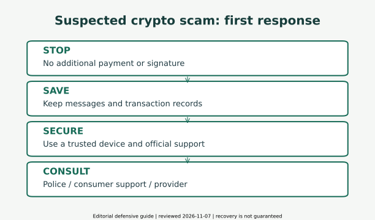

仮想通貨詐欺の見抜き方とは？よくある手口と安全対策を徹底解説【2026年版】
公開日・更新日・調査日：2026年11月7日｜執筆・編集：トピック基地編集部
「少額で利益が出た」「動画の本人が勧めている」「出金には税金が必要」。その説明だけで送金や署名を進めないために、よくある手口と確認先を整理します。既に操作や送金をした場合も、責めずに追加被害の停止から考えましょう。
仮想通貨詐欺とは：資産の値下がりと詐欺を分けて考える
暗号資産（一般に仮想通貨とも呼ばれます）に関連する詐欺には、投資を装って送金させるものと、偽サイトや署名要求などを通じて資産へのアクセスを奪うものがあります。ビットコインなどの値下がりによる損失と、虚偽の説明や窃取による被害は区別が必要です。
暗号資産は国境を越えて移転でき、第三者が鍵を得たり権限を与えられたりすると、利用者の意図と異なる資産移動につながる場合があります。一般に送金後の取消しや回収が難しく、銀行振込と同じ手続で必ず取り戻せるわけではありません。こうした性質と、投資への期待・SNSでの信頼作りが悪用されます。
被害は、不注意な人だけに起きるものではありません。身元や実績が巧妙に偽装されることもあります。自分や家族を責めることより、追加被害を止め、記録を残し、信頼できる窓口へ相談することを優先してください。金融庁のSNS投資勧誘への注意喚起、国民生活センターの暗号資産トラブル情報。
SNS型投資詐欺：信用を作ってから追加送金へ
- 接触：SNSの広告、DM、動画、マッチングアプリなどから投資の話へ誘導
- 信用作り：著名人・専門家・恋人・仲間を装い、別のグループへ移動させる
- 利益の演出：偽の残高、成功報告、少額の出金などで安心させる
- 増額：機会や期限を強調して、追加の投資金を求める
- 出金阻止：税金・保証金・解除料を理由にさらに支払いを求める
上の流れは公式の注意喚起から編集部が整理した説明図で、すべての事件がこの順番になるわけではありません。被害件数や金額の統計は使っていません。SNS型投資詐欺全体の数字を、暗号資産だけの被害額と読み替えることもしません。
LINEやTelegramなどのアプリ自体が詐欺という意味ではありません。見知らぬ相手の勧誘から閉じたグループに移り、第三者への相談を妨げられるなど、行動の組み合わせを確認します。参加者の「利益が出た」という投稿だけでは、実際の取引や資産の裏付けになりません。警察庁・SNS型投資詐欺。
14種類の手口を、接触・兆候・予防・初動で比較
この表の誘い文句は編集部による説明用の例です。特定事件の発言の引用ではありません。横に収まらない表は左右へスクロールできます。
| 種類・根拠 | 接触方法 | 誘い文句の例 | 危険な兆候 | 被害の仕組み | 予防行動 | 気づいた後 |
|---|---|---|---|---|---|---|
| SNS型投資詐欺 公式資料 | 知らない相手のDM | 少額から確実に増える | 別のSNSへ移動・入金を急がせる | 偽の利益表示で信用させ追加送金を促す | 勧誘のリンクから登録せず、第三者と確認 | 送金を止め、やり取り保存・警察等へ |
| 著名人なりすまし広告 公式資料 | 動画・検索・SNS広告 | 本人だけが知る投資法 | 広告と本人の公式発信が一致しない | 著名人の信用を借りて偽サービスへ誘導 | 公式発信を独立した経路で確認 | 広告・URL・会話を保存して相談 |
| 偽投資グループ 公式資料 | LINE・Telegram等への招待 | 先生の指示で全員が利益 | 利益報告ばかり・外部相談を止める | 仲間を装う投稿で判断を誘導 | 参加者数やスクリーンショットを根拠にしない | 追加操作を止めて履歴を保存 |
| 偽取引所・偽アプリ 公式資料 | 紹介リンク・インストール指示 | 限定取引所で特別運用 | 正規の商号・URLと一致しない | 実取引のない残高画面等で資金を集める | 金融庁の一覧と正規サイト・開発元を照合 | 取引所・銀行に公式経路で連絡 |
| フィッシング 公式資料 | 偽メール・SMS・検索結果 | 口座停止を解除してください | 正規と異なるドメイン・認証情報要求 | ログイン情報や認証コードを盗む | 通知リンクを使わず正規アプリ等から確認 | 安全な端末でパスワード・セッションを保護 |
| 秘密鍵・シード窃取 公式資料 | 偽サポート・復元フォーム | 復旧には復元フレーズが必要 | 第三者に秘密情報を渡す要求 | ウォレットの支配権を奪う | 第三者に渡さず正規復元も端末とアプリを確認 | 新しい復元フレーズのウォレットへ安全策を相談 |
| 偽エアドロップ・NFT 公式資料 | 無料配布のDM・不審トークン | 受け取り期限が迫っています | 知らないサイトへの接続・署名が必須 | 受取操作を口実に権限や資産を奪う | 不審トークンの案内に触れず署名を中止 | 接続・承認・秘密鍵漏えいを分けて確認 |
| 悪意ある署名・承認 公式資料 | dappや偽の診断ページ | 署名だけなので無料で安全 | 読み取れない内容・不要な権限 | 承認や署名が将来の資産移動につながる | 理解できない署名は拒否し正規ヘルプで確認 | 公式手順で権限の確認・取消を検討 |
| ラグプル 公式資料 | 新規トークン・SNS企画 | 今だけの先行参加 | 運営・資金管理・権限が不透明 | 運営等による資金持ち逃げや流動性の引き揚げで損害 | 仕組みを理解できない企画へ資金を預けない | 追加救済金を払わず証拠を保存・相談 |
| ポンジスキーム 公式資料 | 高利回り運用・紹介制度 | 毎月安定・紹介すれば上乗せ | 収益源の説明がなく利回り保証 | 新しい参加者の資金を配当のように見せる | 入金や配当実績だけで実運用と判断しない | 新規紹介・送金を止め窓口へ相談 |
| ロマンス詐欺 公式資料 | SNS・マッチングアプリ | 二人の将来のために投資 | 面識がない相手が送金を求める | 親密さや信頼を利用し投資へ誘導 | 金銭の判断を関係性から切り離し相談する | 会話・相手ID・送金履歴を保存 |
| AI生成の偽動画・音声 公式資料 | 有名人動画・ビデオ通話 | 政府や著名人が保証 | 映像だけを根拠に入金を急がせる | 精巧ななりすましで本人と誤信させる | 映像の見た目ではなく独立した公式経路で確認 | 動画の所在・日時を保存して相談 |
| 追加税金・保証金要求 公式資料 | 出金申請後の連絡 | 追加送金すれば全額出金 | 出金のために別の送金を繰り返す | 支払いを口実にさらに資金をだまし取る | 追加送金を止め、制度や請求を独立確認 | 既存送金記録を持ち金融機関・警察等へ |
| 回収を装う二次詐欺 公式資料 | 検索広告・被害投稿へのDM | 必ず取り戻す・先に費用だけ | 回収保証・秘密鍵・前払い要求 | 回収への希望を利用して追加被害を生む | 公的窓口から相談先を探し資格・契約を別途確認 | 依頼前に相談、支払済みなら記録を保存 |
「少額の出金ができた」「アプリに利益が表示された」「有名人の名前がある」という事実だけで、高額な追加送金に進まないでください。相手は実在する会社の登録番号やロゴも流用できます。表示の整い方と運営者の真正性は別です。
著名人・ロマンス・AI動画：見た目だけで本人確認しない
広告やSNS投稿の人物が実在しても、その人が投資を勧めているとは限りません。顔・声・映像・プロフィールは偽装され得ます。動画の不自然さを見抜くことだけに頼らず、その人や所属組織の公式発信を、広告とは独立した経路で確認してください。
ロマンス詐欺では、親密さや将来の約束を足掛かりに暗号資産投資へ誘導する例があります。ビデオ通話をしたことも、投資先の正当性や相手の資金管理能力の証明ではありません。会ったことのない相手が投資や結婚準備などを理由に金銭を求めたら、関係を壊したくない気持ちと金銭の判断を切り離し、第三者に相談しましょう。
自分の口座へ届いた資金を別の口座へ送るよう頼まれることもあります。「投資の手伝い」と言われても引き受けず、金融機関や警察に確認してください。警察庁のロマンス詐欺・AI等によるなりすましの注意喚起。
ラグプル・ポンジ・追加税金の要求をどう見るか
高利回りや配当の実績だけでは実運用を証明しない
ポンジスキームは、実際の投資収益ではなく、新しい参加者の資金を既存参加者への支払いに回し、配当が出ているように見せる仕組みです。紹介報酬や最初の配当があっても、収益源や運用実体の証明にはなりません。利回り保証とリスク説明の欠如があれば、その時点で立ち止まります。米国SEC・Investor.govの定義。
ラグプルは、暗号資産の企画等で運営側が資金や流動性を持ち去るなどして、参加者が被害を受ける行為を指す呼び方です。ポンジと関連して語られることもありますが、両者のすべてが同じ構造とは限りません。監査済みという表示、人気、取引の開始、トークンの存在だけでは、運営の権限や資金管理の安全を保証しません。MetaMaskのラグプル・偽配布等の防御資料。
出金のための追加送金を止める
出金を求めた後で、税金・認証金・保証金・口座凍結解除料などを請求されるのは、公式資料でも警告されている手口です。「あと一度払えば全額戻る」という相手の説明を根拠に追加送金しないでください。請求が本当に税務や契約に基づくものかは、正規の業者や税務当局へ独立した経路で確認します。
実際に税務上の義務が生じることと、勧誘相手に出金の条件として税金を送ることは別です。暗号資産の税金の基本は第7号も参照できますが、相手の要求の正当性を認定するものではありません。
その場で使える危険信号チェックリスト
次の項目は、公式の注意喚起と技術資料を編集部が実用向けに整理したものです。点数や該当数で「詐欺」「安全」を確定しません。選択はページ表示にだけ使い、入力内容の外部送信やアプリによる保存は行いません。秘密鍵、シードフレーズ、氏名、口座番号を入力する機能はありません。
未選択でも安全とは判断できません。これは確認用のメモで、詐欺の判定や安全の保証ではありません。
該当しない項目が多くても安全の証明にはなりません。説明や仕組みを理解できない、正規窓口に確認できない場合は、送金や署名を保留することができます。
金融庁の登録確認：商号・登録番号だけで終わらせない
- 公式入口へ：勧誘メッセージや広告のリンクを使わず、金融庁の暗号資産利用者向けページを開く
- 登録区分を確認：暗号資産交換業者の登録一覧へ進み、業者の正式商号、登録番号、所在地、連絡先等を照合する
- サービスとの関係を照合：勧誘されたブランド名と登録会社の関係、ドメイン、公式アプリの開発元を確認する。一覧にURLがない場合、掲載された連絡先等の独立した正規経路で公式URLやサービス名を確認する
- なりすましを排除：同名会社や同じ登録番号の画像だけで信用しない。正規窓口に確認できるまで入金・アプリ導入をしない
今回取得した金融庁の暗号資産交換業者登録一覧の基準日は2026年9月30日で、取得日は11月7日です。取得日を一覧の基準日と読み替えません。登録一覧は更新されるため、実際の取引時には公式入口から最新の資料を確認します。
業務内容によって確認すべき区分が異なります。金融庁には電子決済手段・暗号資産サービス仲介業の案内もあり、所属業者のための仲介と暗号資産交換業そのものは同じではありません。名乗っている業務と必要な登録・所属関係を確認し、別区分の登録を交換業者の登録と取り違えないでください。ウォレットなど関連サービスが一覧にないことだけで、すべて詐欺と断定する説明でもありません。
登録は個別の投資先の安全性や利益、暗号資産の価値を保証しません。行政処分の有無やサービスのリスク説明も公式資料で確認します。金融庁や警察を名乗っても、利益保証や資産の「保護口座」への送金を指示する連絡を、そのまま信用しないでください。
アカウントを守る：認証・更新・正規アプリ
使い回さないパスワードと強い認証
長く固有のパスワードをサービスごとに使い、信頼できるパスワードマネージャーで管理する方法を検討します。マネージャーやメールのアカウント、端末自体も保護してください。通知で届いたリンクからログインせず、保存した正規URLや正規アプリから状態を確認します。
対応サービスでは多要素認証を有効にし、利用可能ならパスキーや対応セキュリティキーなどフィッシング耐性の高い方法を検討します。SMSや認証アプリのコードでも、不審な相手へ渡せば被害につながる場合があります。求めていない認証通知を承認せず、パスキーでも端末・アカウント復旧・登録先の保護は必要です。IPA・2026年10月の個人情報漏えい時の対処と日頃の対策、IPA・不正ログインへの注意喚起。
更新と導入経路を確認
OS、ブラウザ、正規のアプリを更新し、不要な拡張機能や権限を減らします。公式ストアに掲載されていることだけでも完全な安全の証明にはなりません。正規事業者のサイトが案内するアプリ名・開発元との一致を確認してください。SNSで届いたファイルや、遠隔操作アプリを入れるよう求める連絡には応じないでください。
公共Wi-Fiでは、重要な取引を保留して信頼できる回線・端末を使うのが無難です。HTTPSや鍵マーク、VPNの利用だけで偽サイトが正規になるわけではありません。ネットワークの安全と、アクセス先の真正性を分けて確認します。
ウォレットを守る：秘密情報・署名・接続を分ける
秘密鍵とシードフレーズは第三者に渡さない
秘密鍵は資産を動かすための重要な秘密情報で、シードフレーズ（復元フレーズ）はウォレットの複数の鍵を復元できる情報です。通常の投資勧誘、本人確認、サポートを理由に第三者へ渡すものではありません。本サイトにも入力しないでください。
正規の復元操作が必要な場合も、端末と公式アプリを十分確認します。写真や平文のクラウド保存など漏えい経路を増やす保管を避け、他人に見られない安全な方法でバックアップします。復元フレーズを失うと復旧が難しくなるため、保護と紛失対策の両方が必要です。Ethereum公式・安全対策。
ハードウェアウォレットにも限界がある
鍵をオフラインで扱う仕組みは有用ですが、秘密情報を漏らしたり、自分で悪意ある取引に署名したりするリスクは残ります。正規の販売経路・製品・公式説明を確認し、他人が用意した復元フレーズを使わず、端末画面に出る送信先・数量・内容を確かめます。読めない署名を「機器が安全だから」という理由で承認しないでください。
接続解除とトークン承認の取消は別
Ethereum等のネットワークでは、接続、トークン承認、署名が別の操作になる場合があります。接続を解除しても、既に付与したトークン承認が残ることがあります。「ガス代が不要」「署名だけ」という説明でも、安全とは限りません。MetaMask公式・dapp権限管理。
不要・不審な承認は正規の公式手順で確認し、必要に応じて取消を検討します。取消そのものに取引や手数料が必要な場合もあり、偽の取消・資産診断サイトへ誘導される危険があります。検索広告やDMの「救済ツール」へ接続せず、ネットワークやウォレットごとの公式説明を確認してください。取消で過去の送金が戻るわけでも、すべての署名や権限が無効になるわけでもありません。
少額の送金テストは宛先・ネットワークの操作確認には役立つ場合がありますが、投資先の正当性を証明しません。詐欺では少額の出金を認めて信用させることもあり、大金を送る根拠にはできません。
被害に気づいたら：状況別の初動A〜H

- 今まさに身体への危険や進行中の事件があり緊急対応が必要 → 110
- 送金や署名を求められている → 追加操作を止める → A・H
- 情報入力・アプリ導入・承認をした → 安全な端末で保護と公式相談 → B・C・D・G
- 資金を渡した → 金融機関・取引所へ速やかに連絡し記録を保存 → E・F
一つだけに分類できない場合は複数の対応が必要です。不審リンクを開いただけの場合、情報入力、署名、アプリ導入、ダウンロードの有無を整理し、ページを閉じて正規窓口へ確認します。「開いただけで必ず感染」「入力しなければ絶対安全」といずれにも断定しません。
A．勧誘を受けただけ
送金・接続・署名をせず、独立した公式情報で確認。会話を保存してからブロック等を検討
不安なら家族・188・警察等へ。相手を試すための少額送金はしない
B．ログイン情報を入力した
安全な端末から正規サービスに入り、パスワード変更・他のセッション終了・認証設定と登録先を確認。使い回し先やメールも保護
取引所の不正利用窓口へ連絡。パスワード変更だけで全てのアクセスが消えるとは限らない
C．秘密鍵・シードを入力した
その復元フレーズ全体が危険と考え、利用を止める。安全な端末で新しい復元フレーズのウォレットを作り、残存資産の安全な移動を公式ヘルプに沿って検討
同じシードで口座を増やすだけでは保護できない。自動流出が疑われるときは手数料用資金を何度も補充せず、独立確認した公式サポートに相談
D．不審な承認・署名をした
正規ウォレットの公式説明で、対象ネットワーク・アカウント・承認内容を確認。必要な承認取消を慎重に検討
接続解除だけでは承認は消えない。取消も署名や手数料を伴い得る。全被害を取り消す操作ではなく、秘密鍵漏えいならCも必要
E．暗号資産を送った
追加送金を止め、取引所へ正規窓口から速やかに連絡。送信元・送信先・ネットワーク・日時・数量・TXIDを保存し警察等へ
送金の取消・凍結・回収は保証できない。被害を責めず、早い相談と記録を優先
F．銀行振込で渡した
利用銀行の不正送金・被害窓口と警察に速やかに連絡。銀行名・支店・口座名義・振込日時・金額を保存
口座の利用停止や救済制度の可否は金融機関等が個別判断。返金保証ではない
G．不審アプリを入れた
疑わしい端末のネット接続を切り、別の安全な端末で重要アカウントを保護。利用サービス・端末の公式窓口に相談
アプリ名・入手元・許可した権限等を記録し、端末公式手順に沿って対処。初期化を急いで記録を消さず、証拠保全と被害拡大防止を両立
H．追加送金を要求された
出金・税金・凍結解除・保証金などの名目でも、その要求を根拠に送金しない。会話と支払記録を保存し公式窓口へ
画面残高の全額を取り戻せるという説明で判断しない。税務の相談先へも独立した経路で確認
秘密情報の漏えいや端末への侵入が疑われる場合は、正規の防御資料を参照してください。Kraken Wallet公式・漏えい時の新しい復元フレーズと安全な端末の利用、MetaMask公式・自動流出と同じシードの継続利用への警告。本記事は個別ウォレットの救出を代行せず、移転の成功を保証しません。相手や見知らぬ支援者に秘密鍵を渡さないでください。
証拠保全：何を用意して相談するか
- 相手の表示名・アカウントID・連絡先、勧誘を受けた日時と経路
- 会話、広告、サイトURL、画面や請求内容。可能なら日時の分かる形で保存
- 暗号資産の名称・数量・ネットワーク、送信先と送信元、トランザクションID（TXID）、取引所の履歴
- 銀行振込なら銀行・支店・口座名義・日時・金額・振込明細
- 何を入力・インストール・接続・署名したか、既に行った保護措置
記録を取るために不審なサイトを開き直したり、危険なファイルを再実行したりしないでください。安全な範囲で残せるものを保存し、被害拡大防止を遅らせないことが大切です。端末の初期化などで記録が消える前に、公式窓口へ相談します。
相談用の記録に秘密鍵やシードフレーズを添付する必要はありません。口座情報、本人確認書類、会話、公開アドレスやTXIDも、組み合わせるとプライバシーに関わります。SNSへ一括公開せず、正規の相談先が求める範囲と提出方法を確認してください。相手の指示で送金を重ねて証拠を作る必要もありません。
日本の公式相談窓口：役割と受付条件を確認
2026年11月7日に公式ページで確認。電話番号・受付時間は変更されることがあります。発信前にリンク先の最新案内を確認してください。表は横にスクロールできます。
| 相談先 | 連絡先 | 相談対象 | 時間・限界 | 根拠 |
|---|---|---|---|---|
| 警察相談専用電話 | #9110 | 緊急ではない被害・不審勧誘の相談 | 受付時間・時間外対応は都道府県等で異なる。例：愛知は平日9〜17時（祝日・年末年始除く）。一般番号は地域の公式案内で確認 | 公式資料 / 公式資料 |
| 緊急通報 | 110 | 進行中の事件や身体への危険など、緊急の警察対応が必要な場合 | 通常の相談窓口の営業時間を待つ用途ではない。緊急でない相談は#9110等へ | 公式資料 |
| 消費者ホットライン | 188 | 近くの消費生活センター等へつなぐ相談 | 接続先の窓口により受付時間が異なる。相談は無料でも接続後の通話料がかかる。消費者庁へ直接つながる番号ではない | 公式資料 |
| 金融庁・詐欺的な投資に関する相談ダイヤル | 0570-050588 / IP電話03-6206-6066 | 詐欺的な投資勧誘に関する相談・情報提供 | 電話は平日10〜17時。ウェブ受付24時間は即時対応の意味ではない | 公式資料 |
| 金融庁・金融サービス利用者相談室 | 0570-016811 / IP電話03-5251-6811 | 金融サービスの一般相談、論点整理・他機関紹介等 | 電話は平日10〜17時。個別トラブルのあっせん・仲介・調停は行わない | 公式資料 |
| 利用銀行・暗号資産交換業者 | 各社の公式不正利用窓口 | 口座・取引の保護、被害情報の連絡 | 連絡先・時間は利用先の公式サイト/正規アプリで確認。SNSで来たサポート先を使わない | 公式資料 |
#9110がつながらない回線などの場合は、都道府県警察の公式ページにある一般番号を確認します。時間外の対応も地域で異なるため、全国一律の有人受付時間をここで保証しません。188も自治体の窓口へつなぐ仕組みで、掲載ページにある別の「バックアップ相談」の時間を188全体の受付時間と混同しないでください。
公的機関や交換業者へ連絡すれば必ず凍結・返金できるという意味ではありません。被害状況の整理、保護措置、捜査や消費生活相談につなげるための窓口です。電話する際には、前の節の記録と「いつ・何を・どこへ渡したか」を手元に用意してください。
回収を装う二次詐欺：取り戻したい気持ちを利用させない
被害後に検索した「返金」「追跡」広告や、被害投稿へ届く支援DMにも注意が必要です。「必ず回収」「先に解除費用」「調査に秘密鍵が必要」などの要求に応じないでください。ブロックチェーン上で移動が分かることと、受取人を特定し、法的・実務的に返還を実現できることは別です。
| 要求・説明 | 確認と安全な行動 |
|---|---|
| 成功保証・高額な前払い | 保証を信用して即決せず、公的窓口に相談。費用、作業範囲、返金条件を書面で確認 |
| 弁護士・専門家を名乗る | 肩書やSNSアカウントだけで判断せず、所属団体等の公式経路で本人・連絡先を独立確認 |
| 秘密鍵・シード・遠隔操作が必要 | 渡さず操作を拒否。正規の相談先へ照会 |
| 税金・解除料を追加で払えば回収 | 新たな送金を止め、最初の被害と合わせて記録・相談 |
第二東京弁護士会・2026年2月20日の注意喚起も、暗号資産の追跡と被害回復の違いや、費用を支払う二次被害を警告しています。すべての相談業務を詐欺と決めつけるものではなく、名乗る資格だけで成功が保証されないという点を確認してください。
よくある質問
- 少額の出金ができれば本物の取引所ですか？
- それだけでは判断できません。信用させるための少額払いもあり、登録情報や運営者との関係を別に確認する必要があります。
- 金融庁の登録番号があれば安全ですか？
- 番号の流用があり得ます。商号・連絡先・公式URL・実際のサービスを照合します。登録自体も利益や資産価値を保証しません。
- シードフレーズを渡した後、パスワードを変えれば十分ですか？
- 通常、それだけでは秘密鍵への支配権を取り戻せません。安全な端末と新しい復元フレーズの利用を含め、正規の防御手順を確認してください。
- ウォレットを接続解除すればすべての権限が消えますか？
- トークン承認は残る場合があります。接続と承認、既に行った署名を区別し、ネットワークごとの公式説明を確認します。
- ハードウェアウォレットなら詐欺を完全に防げますか？
- 完全ではありません。鍵の保護に役立っても、秘密情報の漏えいや悪意ある署名の承認には別の対策が必要です。
- 出金のための税金を払うべきですか？
- 相手の説明だけで追加送金しないでください。税務の義務と、相手へ出金条件として送金する要求は別です。公式窓口へ独立確認します。
- 送った暗号資産は取り戻せますか？
- 取消しや回収は保証できません。追加送金を止め、速やかに取引所・金融機関・警察等へ相談し、記録を残してください。
- 家族が被害を疑っているときは？
- 責めずに話を聞き、追加送金をいったん止めることと記録の保存を手伝ってください。一人で抱えず公式相談窓口につなげます。
まとめ：表示の信用より、独立確認と追加被害の停止
危険な勧誘には、知らない相手からの接触、利益の保証、正規情報と一致しない入金先、秘密情報や不明な署名の要求、出金のための追加送金などの兆候があります。一つのチェックや見た目だけで安全を決めず、公式情報を独立した経路で確認してください。
資産の値下がり、取引の失敗、詐欺被害は同じではありません。商品の仕組みは第3号の暗号資産比較、通常の投資リスクは第4号や第8号、購買力の変化は第9号でも整理しています。これらの知識があっても詐欺を完全に防げるわけではありません。
本記事は2026年11月7日時点で確認した一般的な防犯情報で、個別事件の詐欺認定、税務・法律助言、資産回収の代行ではありません。執筆・編集はトピック基地編集部。架空の資格や監修を称しません。編集・訂正方針、訂正等のお問い合わせを掲載しています。本サイトのお問い合わせを緊急の被害相談窓口として使わず、上記の公式窓口へ相談してください。
公式参考資料と監査記録
調査基準日：2026年11月7日。古い基準日の資料は本文・一覧に明記し、最新取得日と区別しています。各手口は公式資料を基にした編集部の整理で、被害金額・件数・返金率は掲載していません。
- 警察庁・SNS型投資詐欺
確認・取得：2026-11-07T03:40:39.216930+00:00（UTC） - 警察庁・SNS型ロマンス詐欺、AI等によるなりすまし
確認・取得：2026-11-07T03:40:39.466647+00:00（UTC） - 金融庁・SNS等での投資勧誘と詐欺的投資相談ダイヤル
確認・取得：2026-11-07T03:40:38.855480+00:00（UTC） - 金融庁・暗号資産の利用者向け案内
確認・取得：2026-11-07T03:40:38.648498+00:00（UTC） - 金融庁・交換業者一覧（2026-09-30現在）
確認・取得：2026-11-07T03:40:38.819749+00:00（UTC） - 金融庁・電子決済手段/暗号資産サービス仲介業案内
確認・取得：2026-11-07T03:40:39.136768+00:00（UTC） - 金融庁・金融サービス利用者相談室
確認・取得：2026-11-07T03:40:39.380495+00:00（UTC） - 警察庁・相談と緊急通報の案内
確認・取得：2026-11-07T03:40:39.290492+00:00（UTC） - 消費者庁・消費者ホットライン188
確認・取得：2026-11-07T03:40:40.262073+00:00（UTC） - 国民生活センター・暗号資産トラブル
確認・取得：2026-11-07T03:40:40.159204+00:00（UTC） - IPA・情報漏えい時の対処/日頃の対策（2026-10-26）
確認・取得：2026-11-07T03:40:42.220270+00:00（UTC） - IPA・不正ログイン注意喚起（2025-08-28）
確認・取得：2026-11-07T03:40:42.251279+00:00（UTC） - Ethereum公式・security and scam prevention
確認・取得：2026-11-07T03:40:39.834027+00:00（UTC） - Kraken Wallet公式・compromised wallet対応
確認・取得：2026-11-07T03:40:40.359770+00:00（UTC） - MetaMask公式・sweeperとシード漏えい
確認・取得：2026-11-07T03:40:41.349693+00:00（UTC） - 第二東京弁護士会・回収をめぐる二次被害注意（2026-02-20）
確認・取得：2026-11-07T03:40:41.196973+00:00（UTC） - 愛知県警・#9110受付時間の地域例
確認・取得：2026-11-07T03:41:44.366302+00:00（UTC） - MetaMask公式・dapp権限と接続解除の限界
確認・取得：2026-11-07T03:41:43.817306+00:00（UTC） - MetaMask公式・ラグプル、偽配布等の防御
確認・取得：2026-11-07T03:41:43.649605+00:00（UTC） - 米国SEC Investor.gov・Ponzi Schemeの定義
確認・取得：2026-11-07T03:41:43.240010+00:00（UTC）